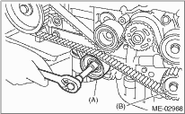
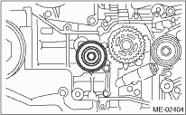

NOTE:
If only a single part is replaced, perform the work without removing the engine from vehicle. Refer to “Timing Belt” in PM section. 
1. Remove the V-belts.
2. Remove the crank pulley.
3. Remove the timing belt cover.
4. Remove the timing belt guide. (MT model)

5. If the alignment mark (a) or arrow mark (which indicates rotation direction) on the timing belt has faded away, put new marks on the belt before removing as shown in procedures below.
(1) Use the ST to turn crankshaft. Align the mark (a) of sprocket to the cylinder block notch (b), then ensure that the right side cam sprocket mark (c), cam cap and cylinder head matching surface (d) LH side cam sprocket mark (e), and timing belt cover notch (f) are properly adjusted.
| ST 499987500 | CRANKSHAFT SOCKET |
(2) Using white paint, put an alignment mark or an arrow mark on timing belts in relation to the crank sprocket and cam sprockets.
Specified data:
Z1: 46.8 teeth
Z2: 43.7 teeth
6. Remove the belt idler (A).
7. Remove the belt idler (B).

8. Remove the timing belt.
2. BELT IDLER AND AUTOMATIC BELT TENSION ADJUSTER ASSEMBLY
1. Remove the belt idler (No. 1).

2. Remove the automatic belt tension adjuster assembly.